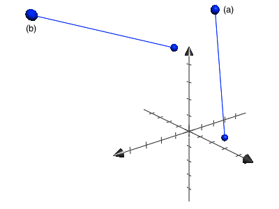

| Fundamental Principles of Counting |
|
| 24. |
Show that for all integers $n,r \geq 0, \ \text{if} \ n+1 > r,$ then
$$P(n+1,r)=\bigg(\frac{n+1}{n+1-r}\bigg)P(n,r).$$
|
| 25. |
Find the values(s) of $n$ in each of the folloing:
- $P(n,2)=90,$
- $P(n,3)=3P(n,2),$
- $2P(n,2)+50=P(2n,2).$
|
| 26. |
How many different paths in the $xy$–plane are there from $(0,0)$ to $(7,7)$ if a path proceeds one step at a time by going either one space to the right (R) or one space upward (U)? How many such paths are there from (2,7) to (9,14)? Can any general statement be made that incorporates these two results?
|
| 27. |
-
How many distinct paths are there from $(-1,2,0)$ to $(1,3,7)$ in Euclidean three–space? If each move is one of the following types?
$$
\begin{align}
\text{(H):}(x,y,z,) &\rightarrow (x+1,y,z); \\
\text{(V):}(x,y,z,) &\rightarrow (x,y+1,z); \\
\text{(A):}(x,y,z,) &\rightarrow (x,y,z+1). \\
\end{align}
$$
- How many such paths are there from $(1,0,5)$ to $(8,1,7)$?
- Generalize the results in parts (a) and (b).
|
| 28. |
-
Determine the value of the integer variable counter afer execution of the following program segment. (Here $i,j$ and $k$ are integer variables.)
counter := 0
for i := 1 to 12 do
counter := counter + 1
for j := 5 to 10 do
counter := counter + 2
for k := 15 downto 8 do
counter := counter + 3
- Which counting principle is at play in part (a)?
|
| 29. |
Consider the following program segment where $i,j$ and $k$ are integer variables.
counter := 0
for i := 1 to 12 do
for j := 5 to 10 do
for k := 15 downto 8 do
print (i-j) * k
- How many times is the
print statement executed?
- Which counting principle is used in part (a)?
|
|
Problem 24 constitutes a first example of a combinatorial proof asked to be given by the reader. Combinatorial proofs involve counting.
| 24. |
$
\begin{equation}
\begin{split}
\displaystyle
P(n+1,r)
&= \frac{(n+1)!}{(n+1-r)!} \\
&= \bigg(\frac{n+1}{n+1-r}\bigg)\bigg(\frac{n!}{(n-1)!}\bigg) \\
&= \bigg(\frac{n+1}{n+1-r}\bigg)P(n,r). \\
& \ \square
\end{split}
\end{equation}
$
|
| 25. |
| a) |
$
\begin{equation}
\begin{split}
\require{cancel}
\displaystyle
P(n,2) = 90 \ \ \Longleftrightarrow \ \ \frac{n!}{(n-2)!} &= 90 \\
n! &= 90(n-2)! \\
(n)(n-1)! &= 90(n-2)! \\
n &= \frac{90(n-2)!}{(n-1)!} \\
&= \frac{90\color{grey}{\cancel{(n-2)!}}}{(n-1)\color{grey}{\cancel{(n-2)!}}} = \frac{90}{(n-1)} \\
10 &= \frac{90}{(10-1)} = 10. \\
& \ \square
\end{split}
\end{equation}
$
|
| b) |
$
\begin{equation}
\begin{split}
\require{cancel}
\displaystyle
P(n,3) &= 3P(n,2) \\
\frac{n!}{(n-3)!} &= 3\bigg(\frac{n!}{(n-2)!}\bigg) \\
\frac{n!}{(n-3)!} \bigg/ \bigg(\frac{n!}{(n-2)!}\bigg) &= 3 \\
\bigg(\frac{n!}{(n-3)!}\bigg) \bigg(\frac{(n-2)!}{n!}\bigg) &= \\
\bigg(\frac{\color{grey}{\cancel{n!}}}{\color{grey}{\cancel{(n-3)!}}}\bigg) \bigg(\frac{(n-2)\color{grey}{\cancel{(n-3)!}}}{\color{grey}{\cancel{n!}}}\bigg) &= \\
n-2 &= 3 \\
n &= 5. \\
& \ \square
\end{split}
\end{equation}
$
|
| c) |
$
\begin{equation}
\begin{split}
\require{cancel}
\displaystyle
2P(n,2)+50 &= P(2n,2) \\
\frac{2n!}{(n-2)!}+50 &= \frac{(2n)!}{(2n-2)!} \\
\frac{2n(n-1)\color{grey}{\cancel{(n-2)!}}}{\color{grey}{\cancel{(n-2)!}}}+50 &= \frac{2n(2n-1)\color{grey}{\cancel{(2n-2)!}}}{\color{grey}{\cancel{(2n-2)!}}} \\
2n(n-1)+50 &= 2n(2n-1) \\
2[n(n-1)+25] &= 2n(2n-1) \\
n(n-1)+25 &= n(2n-1) \\
25 &= n(2n-1)-n(n-1) \\
25 &= n[(2n-1)-(n-1)] \\
25 &= n(2n-1-n+1) \\
n^2 &= 25 \\
n &= 5. \\
& \ \square
\end{split}
\end{equation}
$
|
|
| 26. |
For $(0,0) \rightarrow (7,7),$ two such paths may look like the following:
Notice that no matter what path we take, the move–combintion will always consit of 7Rs and 7Us. That is to say, we are looking for the number of permutations of the array $\{\text{R,R,R,R,R,R,R,U,U,U,U,U,U,U}\} \ \Rightarrow \ 14!/(7!7!).$ The numbers are the same for $(2,7) \rightarrow (9,14).$ In general, for nonnegative integers $m,n,$ and any real numbers $x,y,$ the number of such paths from $(x,y)$ to $(x+m,y+n)$ is $(m+n)!/(m!n!). \ \square$
|
| 27. |
I've plotted and labeled both situations, (a) and (b), in the coordinate system below.

-
Each path consits of 2 horizontal, 1 vertical, and 7 axial moves. Hence, there are $10!/(2!1!7!)$ ways to arrange these 10 moves, which yields the number of paths. $\square$
-
Again, there are $10!/(2!1!7!)$ available paths. $\square$
-
If $x,y,z$ are any real numbers, and $m,n,p$ are nonnegative integers, then the number of paths from $(x,y,z)$ to $(x+m,y+n,z+p)$ is $(m+n+p)!/(m!n!p!). \ \square$
|
| 28. |
-
The
for loop for $i$ is executed $(12-1)+1=12$ times, while those for $j$ and $k$ are executed $(10-5)+1=6,$ and $(15-8)+1=8$ times, respectively. Consequently, the given script will return a value of counter equal to $$0+12(1)+6(2)+8(3)=48. \ \square$$
-
This script has three tasks — $T_1, T_2, T_3$ — defined by the
do procedure. Task $T_1$ coccurs each time we traverse the instructions in the $i$ loop. Similarly, tasks $T_2$ and $T_3$ occur during eacch iteration of the $j$ and $k$ loops, respectively. The final value for the integer variable counter follows by the rule of sum. $\square$
-
If $x,y,z$ are any real numbers, and $m,n,p$ are nonnegative integers, then the number of paths from $(x,y,z)$ to $(x+m,y+n,z+p)$ is $(m+n+p)!/(m!n!p!). \ \square$
|
| 29. |
(a) and (b): Again, the script defines three distinct tasks. By the rule of product, the print statement is executed $8\cdot6\cdot12=576$ times. $\square$
|
|